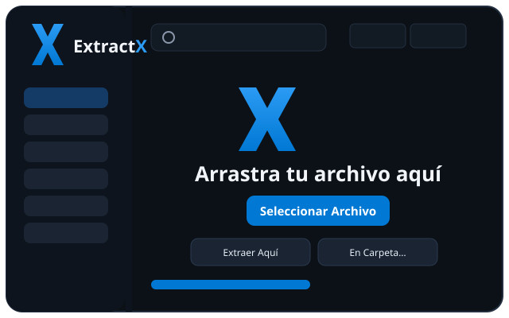

RÁPIDO · SEGURO · SIN LÍMITES · v1.2.1
El descompresor con apariencia de Windows 11: doble clic, mini ventana, menú de clic derecho y modo completo. ZIP, RAR, 7Z, TAR, GZ e ISO.

Doble clic a un comprimido y extraes en 2 clics. Pequeña, rápida, se cierra sola al terminar.
Historial, favoritos, bóveda de contraseñas, extracción masiva, compresión avanzada y herramientas.
Extraer con ExtractX y Comprimir con ExtractX directo en el Explorador.
Motor nativo sin dependencias para lo diario y motor 7-Zip de rescate para RAR sólidos, cifrados e ISO. Si uno falla, el otro lo intenta solo.
ZIP, RAR/RAR5, 7Z, TAR, GZ/TGZ, ISO, CAB, BZ2, XZ, WIM. Rutas peligrosas saneadas.
ZIP (con contraseña), 7Z, TAR, TAR.GZ, GZ y RAR cuando WinRAR está instalado.
CRC + prueba con 7-Zip. Reparación de ZIP y benchmark incluidos.
Windows protege la app predeterminada. Tras instalar, abre Configuración de Windows → Aplicaciones → Aplicaciones predeterminadas y elige ExtractX en .zip, .rar y .7z.
Sí, si tienes WinRAR instalado: ExtractX usa su motor oficial (RAR es propietario). Sin WinRAR, el formato RAR muestra cómo instalarlo.
Sí, licencia MIT para uso personal y comercial.